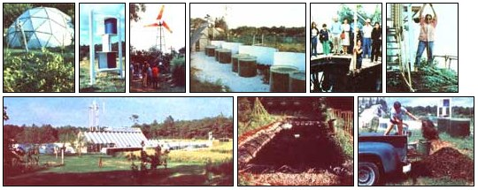

STAFF PHOTOS
TOP, LEFT TO RIGHT: [1] The original backyard fish farm in housed in a geodesic dome ... [2] A Savonius rotor?built from barrels? delivers air to fishponds. [3] The sailwing windmill begins pumping water in a 7-MPH breeze.[4] Tilapia tanks are heated by sunlight reflected from concrete walls and white gravel. [5] inside, Nancy Jack Todd explains the workings of the food-producing bioshelter. [6] Within the ark, downs of different hybrid and grafted tomatoes?along with other garden vegetables?flourish. ABOVE, LEFT TO RIGHT: [7] The ark is by far the most distinctive architectural feature of the Cape Cod community of Hutchville. [8] Fish and hydroponic tomatoes grow symbiotically in this organically sealed pond. and [9] The alchemists collect seaweed to provide mulch and compost for their wholistic gardens.